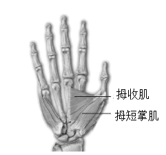
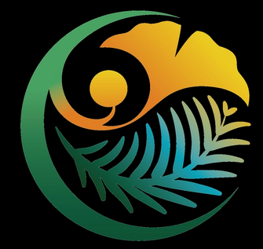

2022年北京市中考生物真题 · 选择题 第16、17、18、19、20题
16. 握手是人与人之间表示友好的一种礼仪。握手时，大拇指要向手心运动。如图是人右手掌心面骨骼及部分肌肉示意图，下列相关叙述错误的是

A. 拇短掌肌两端附着在同一块骨上B. 握住手时，拇收肌处于收缩状态
C. 握手时，骨骼肌牵拉骨绕关节运动D. 握手动作在神经系统调节下完成
17. 植物的下列繁殖方式不属于无性生殖的是
A. 播种玉米种子B. 嫁接苹果枝条C. 扦插柳树枝条D. 兰花组织培养
18. 2022年4月，中国国家植物园在北京正式揭牌，其标志中包含了我国特有珍稀裸子植物银杏和水杉等元素（如图）。这两种植物的基本特征是

A. 具有假根、茎和叶的分化B. 不具有输导组织
C. 种子裸露，无果皮包被D. 生活在阴湿环境
19. 正常女性体细胞染色体的组成是（ ）
A. 22条常染色体+XB. 22对常染色体+Y
C. 22对常染色体+XYD. 22对常染色体+XX
20. 紫花苜蓿是一种优质牧草。我国航天员将其种子带入太空，使种子在射线和微重力等因素作用下发生变异，选育新品种。该育种方式从根本上改变了紫花苜蓿的
A. 生活环境B. 形态结构C. 遗传物质D. 生活习性